Overview of the mvgam package
Nicholas J Clark
2026-10-28
Source:vignettes/mvgam_overview.Rmd
mvgam_overview.Rmdmvgam fits Bayesian state-space models to time series,
extending the dynamic generalised additive models of Clark and Wells
(2023). The observation model is a brms formula (Bürkner
2017). A second formula, trend_formula, adds a latent state
that evolves through time. Temporal structure that the covariates do not
explain is estimated as part of the latent state. Forecasts carry that
structure forward. Stan fits the model. The fitted object works with the
post-processing tools of four packages: brms,
marginaleffects, loo,
bayesplot.
For an observation on series at time , with link function and a response distribution :
The
are any terms a brms formula accepts: linear effects,
smooths (Wood 2017), Gaussian processes, monotonic effects and random
effects. The latent state
follows one of the trend processes below. The loadings
map it onto the series. Each series has its own state when
is the identity. A few shared factors drive many series when
has fewer columns than there are series.
What mvgam can model
Every brms family works as the observation model.
mvgam adds families for ecological and count data:
| Family | Use case |
|---|---|
tweedie() |
Non-negative data with many exact zeros |
beta_nb() |
Counts with heavier tails than a negative binomial |
com_binomial() |
Bounded counts that are over- or under-dispersed |
occ() |
Occupancy from repeated detection surveys |
nmix() |
Abundance from repeated counts with imperfect detection |
diri(), multi(),
categ()
|
Compositions and categorical outcomes |
mvn(), mvt()
|
Correlated continuous responses |
?mvgam_families lists every family by the response type
it suits.
trend_formula names the latent state with one
constructor. It can also hold covariates and smooths that act on the
state:
| Constructor | Latent state | Typical use |
|---|---|---|
RW() |
Random walk | Series with no fixed mean |
LLT(damped = , season = ) |
Level with a time-varying slope and an optional season | Growth that changes rate or levels off, and seasonal shapes that drift |
AR(p = ) |
Autoregression, including sparse lags such as
p = c(1, 12)
|
Momentum and seasonal recurrence |
VAR(p = ) |
Vector autoregression | Series that drive one another |
CAR() |
Continuous-time AR(1) | Irregular times, and series observed at their own times |
ZMVN() |
Correlated residuals with no time recursion | Sites, regions or species |
PW() |
Piecewise linear or logistic growth | Trends with changepoints |
The constructors share a set of options. cor = TRUE
correlates the innovations across series. gr with
subgr pools correlation matrices across groups.
n_lv sets a number of shared latent factors below the
number of series. df gives the innovations Student-t tails.
ma = TRUE adds a moving-average term to RW(),
AR() or VAR().
?trend_constructors lists the options each constructor
takes. hindcast() and forecast() return the
parts of a state through component, such as the level,
slope and season of LLT().
mvgam() fits data in long format, one row per series and
time. jsdgam() fits joint species distribution models to
one row per site and species, with phylogenetic and trait-informed
loadings.
Portal rodent captures
portal_data holds monthly captures of four desert rodent
species from the Portal Project, a long-term field study in Arizona
(Ernest et al. 2018). Trapping follows the lunar cycle. Some months went
unsampled, which leaves missing counts. Two covariates come with the
counts: minimum temperature (mintemp) and a 12-month moving
average of vegetation greenness (ndvi_ma12). We held out
the last 12 months of each series to score forecasts.
Fitting any model below needs a working Stan installation, through
either cmdstanr or rstan; the cmdstanr
guide covers the setup.
One species
The Desert Pocket Mouse (PP) is dormant through the colder months.
Its captures run from long stretches of zeros to peaks above 20.
mvgam_data() checks the counts against the family and plots
the series, its distribution and its autocorrelation, with the held-out
months in black:
pp_train <- droplevels(subset(train, series == "PP"))
pp_test <- droplevels(subset(test, series == "PP"))
mvgam_data(pp_train, family = poisson(), y = "captures",
newdata = pp_test)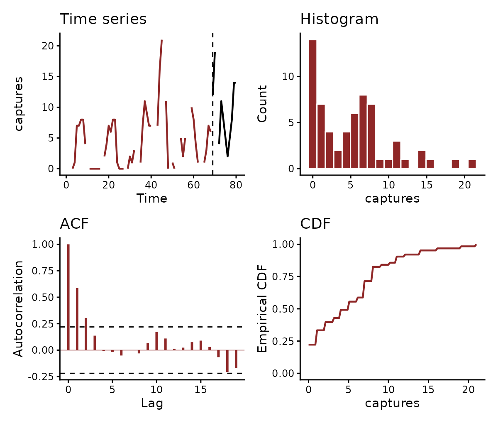
The first model relates captures to smooth functions of the two covariates, with no latent state:
fit_gam <- mvgam(
captures ~ s(mintemp, k = 6) + s(ndvi_ma12, k = 6),
family = poisson(),
data = pp_train,
newdata = pp_test,
silent = 2
)Captures in one month carry over into the next beyond anything the covariates explain. The randomised quantile residuals of this model remain strongly autocorrelated at lag 1:
plot(fit_gam, type = "residuals", series = "PP")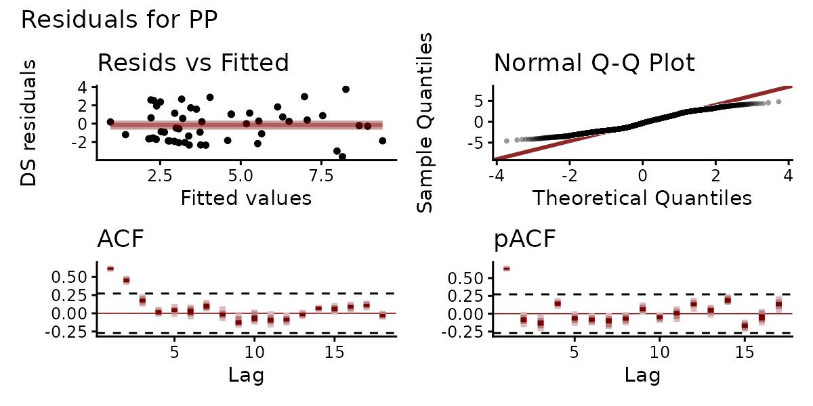
The second model moves both smooths into trend_formula,
where they act on a latent state that follows an AR(1) process. The
observation formula keeps the intercept:
fit_ar <- mvgam(
captures ~ 1,
trend_formula = ~ s(mintemp, k = 6) + s(ndvi_ma12, k = 6) + AR(),
family = poisson(),
data = pp_train,
newdata = pp_test,
silent = 2
)
summary(fit_ar)
#> Family: poisson
#> Links: mu = log
#> Formula: captures ~ 1
#> Data: pp_train (Number of observations: 68)
#> Trends: AR(1); formula: ~s(mintemp, k = 6) + s(ndvi_ma12, k = 6)
#> Draws: 4 chains, each with iter = 2000; warmup = 1000; thin = 1;
#> total post-warmup draws = 4000
#>
#> == Observation Model ==
#> Regression Coefficients:
#> Estimate Est.Error l-95% CI u-95% CI Rhat Bulk_ESS Tail_ESS
#> Intercept 0.81 0.61 -0.39 2.12 1.00 632 872
#>
#> == Trend Model ==
#> Smoothing Spline Hyperparameters:
#> Estimate Est.Error l-95% CI u-95% CI Rhat Bulk_ESS Tail_ESS
#> sds(smintemp_1) 1.11 1.02 0.04 3.66 1.01 1075 1761
#> sds(sndvi_ma12_1) 2.48 1.65 0.15 6.32 1.00 713 752
#>
#> Regression Coefficients:
#> Estimate Est.Error l-95% CI u-95% CI Rhat Bulk_ESS Tail_ESS
#> smintemp_1 3.36 2.27 -1.47 8.09 1.00 1366 1684
#> sndvi_ma12_1 3.36 4.53 -4.53 15.22 1.01 433 161
#>
#> Trend Specific Parameters:
#> Estimate Est.Error l-95% CI u-95% CI Rhat Bulk_ESS Tail_ESS
#> sigma_trend[PP] 0.70 0.14 0.46 1.01 1.01 1236 2140
#> ar1_trend[PP] 0.82 0.10 0.58 0.98 1.01 328 134
#>
#> Draws were sampled using sampling(NUTS). For each parameter, Bulk_ESS
#> and Tail_ESS are effective sample size measures, and Rhat is the potential
#> scale reduction factor on split chains (at convergence, Rhat = 1).
#>
#> Next steps:
#> - `pp_check(fit)`: posterior predictive checks
#> - `forecast(fit, newdata = ...)`: out-of-sample forecasts
#> - `lfo_cv(fit)`: leave-future-out model comparison
#> - `conditional_effects(fit)`: covariate effects
#> Use `how_to_cite(fit)` for a methods paragraph and `methods_md(fit)` for its equations.The latent state absorbs the persistence from one month to the next. The residuals of this fit show no autocorrelation left:
plot(fit_ar, type = "residuals", series = "PP")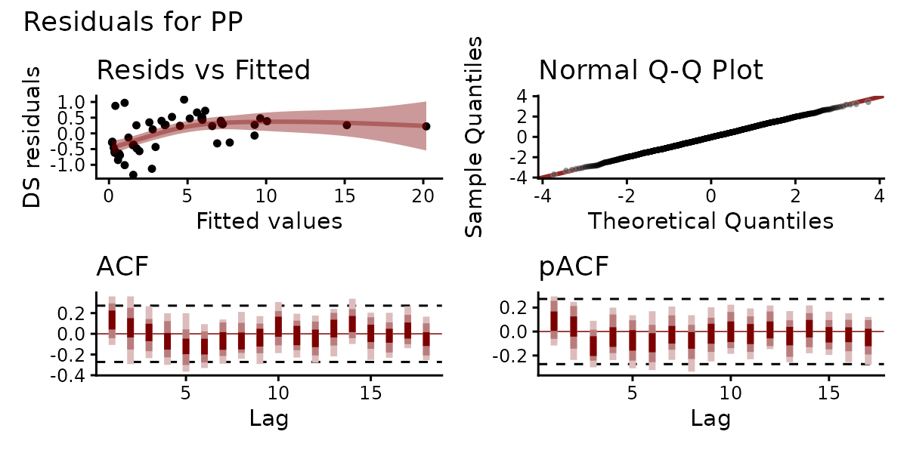
pp_check() compares the observed counts with counts
drawn from the fitted model. The rootogram shows the model reproducing
the distribution of captures, zeros included:
pp_check(fit_ar, type = "rootogram")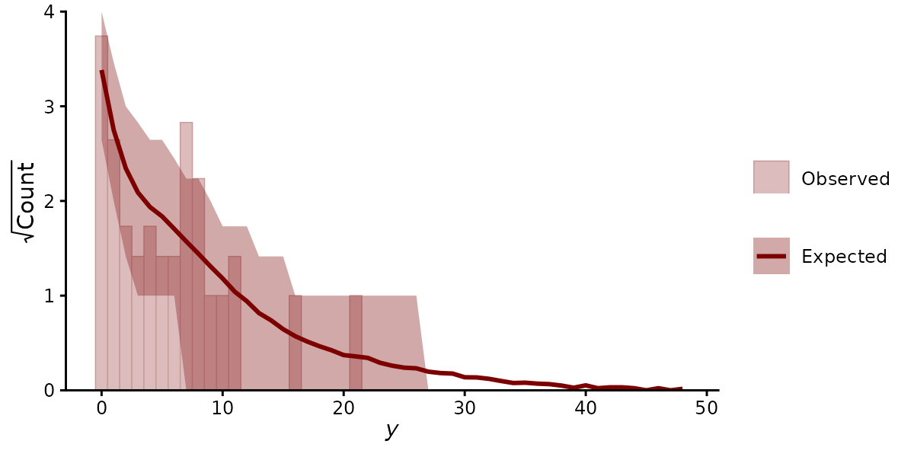
conditional_effects() plots each covariate’s effect on
the expected count. The marginaleffects functions, such as
predictions(), comparisons() or
slopes(), work on the fit directly:
plot(conditional_effects(fit_ar, type = "expected"), ask = FALSE)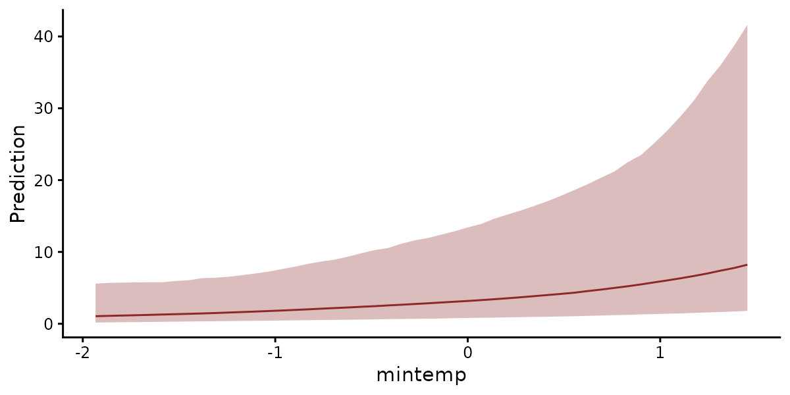
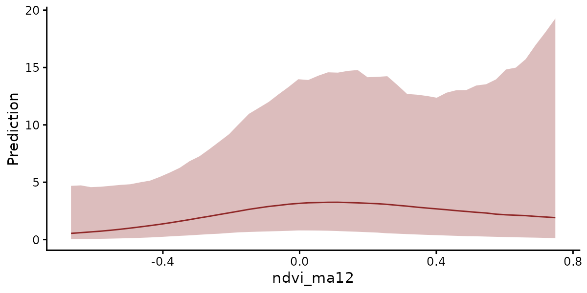
forecast() continues the latent state from its last
estimated values into the held-out months. Without a latent state, the
first model forecasts from the covariates alone. Its intervals miss most
of the high counts:
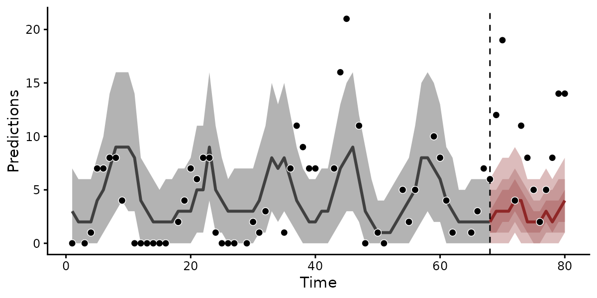
plot(fc_ar)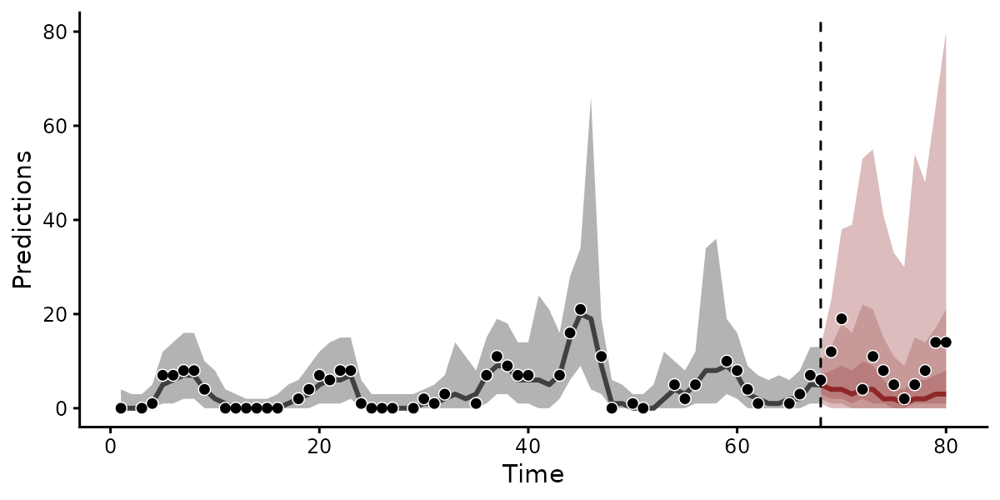
compare_scores() scores both forecasts with the
continuous ranked probability score (CRPS), where lower is better.
summary() sets the scores out by forecast horizon:
scores <- compare_scores(fc_gam, fc_ar, score = "crps",
model_names = c("GAM", "AR"))
summary(scores)
#> # A tibble: 12 × 4
#> series eval_horizon GAM AR
#> <fct> <int> <dbl> <dbl>
#> 1 PP 1 8.38 4.82
#> 2 PP 2 14.4 9.67
#> 3 PP 3 NA NA
#> 4 PP 4 0.482 1.66
#> 5 PP 5 6.14 4.07
#> 6 PP 6 4.48 3.23
#> 7 PP 7 2.08 1.92
#> 8 PP 8 0.369 0.803
#> 9 PP 9 1.49 1.71
#> 10 PP 10 4.43 3.42
#> 11 PP 11 9.80 7.22
#> 12 PP 12 9.15 6.64
plot(scores, relative = "GAM")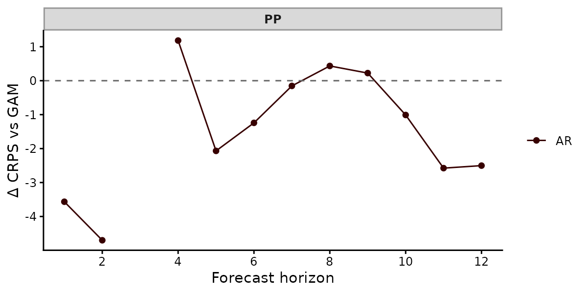
The latent state improves the forecasts. The AR model has the lower CRPS in 8 of the 11 scored months. Its CRPS sums to 45.2 against 61.2 for the smooth-only model. Its 90% intervals contain 11 of the 11 held-out counts. Those of the model without a latent state contain 4.
score() also returns the log score, interval scores and,
for several series, energy and variogram scores. lfo_cv()
repeats the comparison over many forecast origins by refitting on
successively longer windows.
Four species
The four species share the covariates but respond to them
differently. The observation formula gives each species its own mean
through series. In trend_formula,
by = lv_axis() gives each species its own smooths of
temperature and vegetation. AR(cor = TRUE) gives each
species its own latent AR(1) state, with innovations correlated across
species:
fit_cor <- mvgam(
captures ~ series,
trend_formula = ~ s(mintemp, by = lv_axis(), k = 6) +
s(ndvi_ma12, by = lv_axis(), k = 6) + AR(cor = TRUE),
family = poisson(),
data = train,
newdata = test,
silent = 2
)conditional_effects() with series = "all"
draws each species’ response to temperature in a panel of its own. The
responses differ clearly among species. Captures of PP rise with minimum
temperature and those of PB rise at the warmest temperatures, while
captures of the two kangaroo rats, DM and DO, fall slightly:
plot(
conditional_effects(fit_cor, effects = "mintemp", series = "all",
type = "expected"),
ask = FALSE
)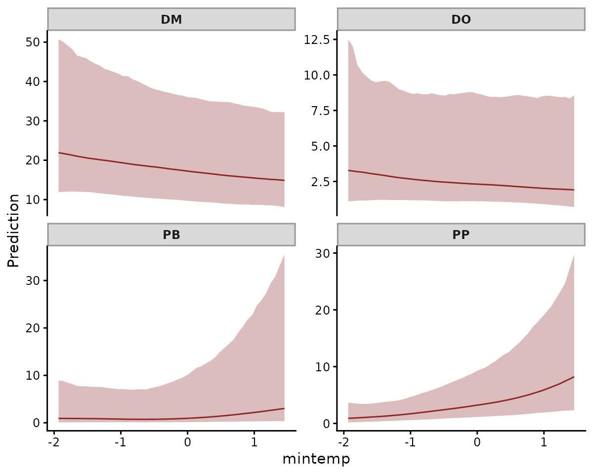
The forecasts come from one joint posterior. Each species keeps its own scale and persistence:
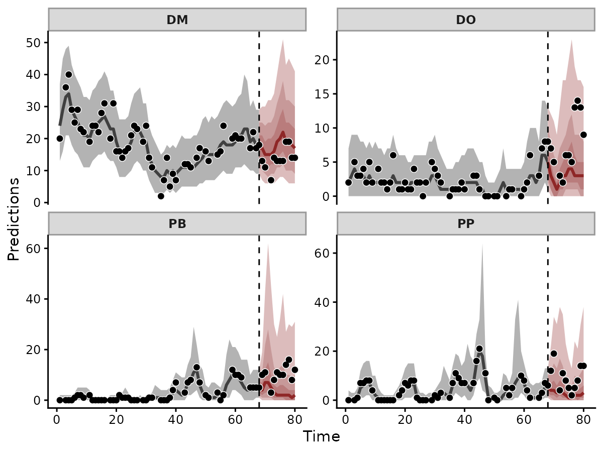
The forecasts track the held-out counts of all four species. Their 90% intervals contain 43 of the 44 held-out counts.
residual_cor() returns the correlations among the
species’ innovations, which measure how strongly the species rise and
fall together once temperature and vegetation are accounted for:
rc <- residual_cor(fit_cor)
plot(rc)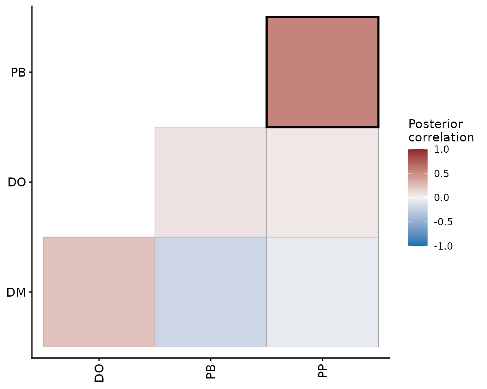
The two pocket mouse species, PB and PP, share the strongest
correlation, 0.55 (95% interval 0.13 to 0.84). n_lv would
instead estimate a few shared latent factors for many species.
VAR() would estimate how each species’ state affects the
others at the next time step.
Reporting
methods_md() writes the fitted model as Markdown
equations with its priors. how_to_cite() returns a methods
paragraph and the references for the model’s components:
methods_md(fit_ar, heading_level = 4)Data
: non-negative integer counts
observations, series, time points
Predictors:
- : continuous covariate
- : continuous covariate
Model
where:
- indexes series, indexes time
- : conditional mean of
- : population intercept
- : latent state at series time
- : trend predictor from ‘trend_formula’
- : thin plate regression spline in , basis size , smoothing SD
- : thin plate regression spline in , basis size , smoothing SD
- : process innovation, SD
- : autoregressive coefficient at lag
Implementation
Fitted with mvgam 2.0.0 (brms 2.23.2; Stan 2.40.0 via cmdstanr). Hamiltonian Monte Carlo: 4 chains, 1000 warmup + 1000 sampling iterations per chain.
mvgam(
formula = captures ~ 1,
trend_formula = ~s(mintemp, k = 6) + s(ndvi_ma12, k = 6) + AR(),
data = pp_train,
family = poisson(),
backend = "cmdstanr",
chains = 4,
iter = 2000,
warmup = 1000
)
how_to_cite(fit_ar)
#> Methods text skeleton
#> We used the R package mvgam (version 2.0.0; Clark & Wells, 2023) to
#> construct, fit and interrogate the model. mvgam fits Bayesian
#> state-space models that combine flexible predictor effects in both the
#> process and observation components, using functionality from the brms
#> (Burkner 2017) and mgcv (Wood 2017) packages. Observations followed the
#> poisson family with a log link. The latent process followed AR(1)
#> dynamics. The mvgam-constructed model and data were passed to Stan
#> (Carpenter et al. 2017) via the cmdstanr interface (Gabry et al. 2024).
#> We ran 4 Hamiltonian Monte Carlo chains for 1000 warmup iterations and
#> 1000 sampling iterations. Rank-normalised split Rhat and effective
#> sample sizes (Vehtari et al. 2021) were used to monitor convergence.
#>
#> Primary references
#> Burkner PC (2017). brms: An R Package for Bayesian Multilevel Models
#> Using Stan. Journal of Statistical Software, 80(1), 1-28.
#> https://doi.org/10.18637/jss.v080.i01
#> Carpenter B, Gelman A, Hoffman MD, Lee D, Goodrich B, Betancourt M,
#> Brubaker M, Guo J, Li P and Riddell A (2017). Stan: A probabilistic
#> programming language. Journal of Statistical Software, 76(1), 1-32.
#> https://doi.org/10.18637/jss.v076.i01
#> Clark NJ and Wells K (2023). Dynamic Generalized Additive Models (DGAMs)
#> for forecasting discrete ecological time series. Methods in Ecology and
#> Evolution, 14(3), 771-784. https://doi.org/10.1111/2041-210X.13974
#> Gabry J, Cesnovar R, Johnson A and Bronder S (2024). cmdstanr: R
#> Interface to 'CmdStan'. https://mc-stan.org/cmdstanr/
#> Vehtari A, Gelman A, Simpson D, Carpenter B and Burkner P (2021).
#> Rank-normalization, folding, and localization: An improved Rhat for
#> assessing convergence of MCMC. Bayesian Analysis, 16(2), 667-718.
#> https://doi.org/10.1214/20-BA1221
#> Wood SN (2017). Generalized Additive Models: An Introduction with R (2nd
#> edition). Chapman and Hall/CRC.
#>
#> Other useful references
#> Arel-Bundock V, Greifer N and Heiss A (2024). How to interpret
#> statistical models using marginaleffects for R and Python. Journal of
#> Statistical Software, 111(9), 1-32.
#> https://doi.org/10.18637/jss.v111.i09
#> Burkner PC, Gabry J and Vehtari A (2020). Approximate leave-future-out
#> cross-validation for Bayesian time series models. Journal of Statistical
#> Computation and Simulation, 90(14), 2499-2523.
#> https://doi.org/10.1080/00949655.2020.1783262
#> Gabry J, Simpson D, Vehtari A, Betancourt M and Gelman A (2019).
#> Visualization in Bayesian workflow. Journal of the Royal Statistical
#> Society: Series A (Statistics in Society), 182(2), 389-402.
#> https://doi.org/10.1111/rssa.12378
#> Vehtari A, Gelman A and Gabry J (2017). Practical Bayesian model
#> evaluation using leave-one-out cross-validation and WAIC. Statistics and
#> Computing, 27(5), 1413-1432. https://doi.org/10.1007/s11222-016-9696-4
#>
#> Use `bibtex(x)` for a BibTeX block ready for your .bib file.Where to go next
- The data
formatting vignette prepares data for
mvgam(), including missing values and irregular times. - The dynamic factor vignette shares latent states across many series.
- The VAR article estimates how series drive one another, with impulse responses and variance decompositions.
- The JSDM
article fits multispecies data with
jsdgam(). - The N-mixture article covers detection-error families.
- The forecast
evaluation article compares models with
score()andlfo_cv()and combines them withensemble().
References
Bürkner, P.-C. (2017). brms: An R package for Bayesian multilevel models using Stan. Journal of Statistical Software 80(1), 1-28. doi:10.18637/jss.v080.i01
Clark, N. J. and Wells, K. (2023). Dynamic Generalized Additive Models (DGAMs) for forecasting discrete ecological time series. Methods in Ecology and Evolution 14, 771-784. doi:10.1111/2041-210X.13974
Ernest, S. K. M. et al. (2018). The Portal Project: a long-term study of a Chihuahuan desert ecosystem. bioRxiv 332783. doi:10.1101/332783
Wood, S. N. (2017). Generalized Additive Models: An Introduction with R (2nd edition). Chapman and Hall/CRC. doi:10.1201/9781315370279